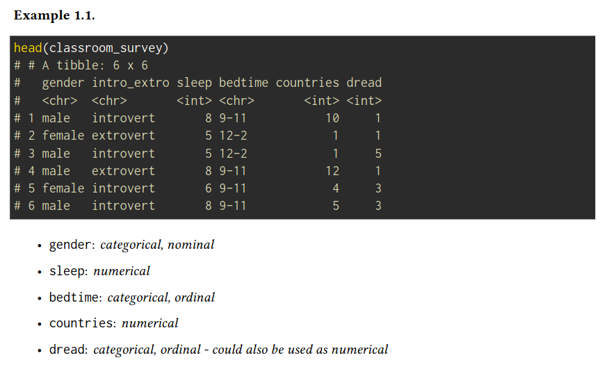
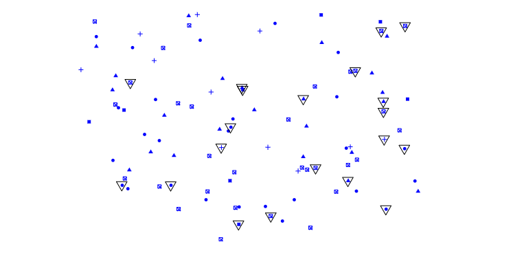
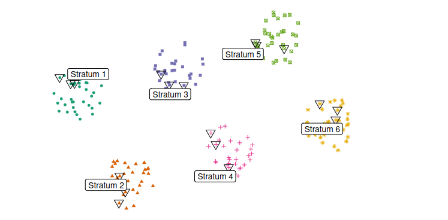
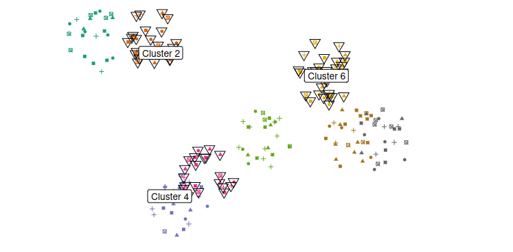
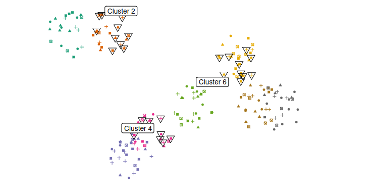

1 Intro to Data
Case Study:
In statistical experiments,the treatment group is the group that receives the intervention or treatment being studied, while the control group is similar but does not receive the treatment. This setup helps researchers compare the effects of the treatment against no treatment or against a standard treatment, if one exists.
Do the data show a “real” difference between the groups?
If the difference is quite large, it is more believable that the difference is real. Conclusion: We need statistical tools to determine quantitatively if the difference is so large that we should reject the notion that it was due to chance.
Data Basics:
Types of Variables
The type of a variable is one of the following:
- Numerical: Variable can take a wide range of numerical values, and it is sensible to add, subtract, or take averages with those values.
- Categorical: Variable has a finite number of values, which are categories (called levels), and it is not sensible to add, subtract, or take averages with those values.
Categorical variables can be further distinguished as:
- ordinal: the levels of the variable have a natural ordering, or
- nominal: the levels of the variable don’t have a natural ordering

Relationships among variables:
When two variables show some connection with one another, they are called associated or dependent variables. Conclusion: If two variables are not associated, i.e., there is no evident connection between them, they are said to be independent.
Explanatory and response variables:
When we suspect one variable might causally affect another, we label the first variable the explanatory variable and the second the response variable.
Labeling variables as explanatory and response does not guarantee the relationship between the two is causal, even if an association is identified between the two variables.
Populations and samples:
Census
Wouldn’t it be better to just include everyone and “sample” the entire population? This is called a census. There are problems with taking a census: 1. It can be difficult to complete a census: there always seem to be some subjects who are hard to locate or hard to measure. And these difficult-to-find subjects may have certain characteristics that distinguish them from the rest of the population. 2. Populations rarely stand still. Even if you could take a census, the population changes con- stantly, so it’s never possible to get a perfect measure. 3. Taking a census may be more complex than sampling.
From exploratory analysis to inference
Exploratory analysis: You taste a spoonful of soup and decide the spoonful you tasted isn’t salty enough.
Inference: You generalize and conclude that your entire soup needs salt.
Sampling Bias
- Non-response: If only a small fraction of the randomly sampled people chooses to respond to a survey, the sample may no longer be representative of the population.
- Voluntary response: The sample consists of people who volunteer to respond, because they have strong opinions on the issue. Such a sample will also not be representative of the population
- Convenience sample: Individuals who are easily accessible are more likely to be included in the sample.
Show Answer
i and iiiObservational studies and experiments
- If researchers collect data in a way that does not directly interfere with how the data arise, i.e., they merely “observe”, we call it an observational study. In this case, only a relationship between the explanatory and the response variables can be established.
- If researchers randomly assign subjects to various treatments in order to establish causal connections between the explanatory and response variables, we call it an experiment.
Extraneous variables, that affect both the explanatory and the response variable and that make it seem like there is a relationship between the two, are called confounding variables.
Example: A study found a rather strong correlation between the ice cream sales and the number of shark attacks for a number of beaches that were sampled.
Conclusion: Increasing ice cream sales causes more shark attacks (sharks like eating people full of ice cream). Better explanation: The confounding variable is temperature. Warmer temperatures cause ice cream sales to go up. Warmer temperatures also bring more people to the beaches, increasing the chances of shark attacks.
Obtaining good samples - Sampling principles and strategies
If observational data are not collected in a random framework from a population, these statistical methods, i.e.,the estimates and errors associated with the estimates, are not reliable.
Simple random sampling
Randomly select cases from the population without implied connection between the selected points. A sample is called a simple random sample if each case in the population has an equal chance of being included in the final sample.

Stratified sampling
Similar cases from the population are grouped into so-called strata. Afterward, a simple random sample is taken from each stratum. Stratified sampling is especially useful when the cases in each stratum are very similar in terms of the outcome of interest.

Cluster sampling
Clusters are usually not made up of homogeneous observations. We take a simple random sample of clusters, and then sample all observations in that cluster.

Multistage sampling
Clusters are usually not made up of homogeneous observations. We take a simple random sample of clusters, and then take a simple random sample within each sampled cluster.

Cluster or multistage sampling can be more economical than the other sampling techniques. Also, unlike stratified samples, they are most useful when there is a large case-to-case variability within a cluster, but the clusters themselves do not look very different. ##### examples: A city council has requested a household survey be conducted in a suburban area of their city. The area is broken into many distinct and unique neighborhoods, some including large homes and some with only apartments. Which approach would likely be the least effective?
Show Answer
We can think of the different neighborhoods as different clusters/strata. Since they are distinct but homogeneous within, cluster samlping would be the least effective.On a large college campus first-year students and sophomores live in dorms located on the eastern part of the campus and juniors and seniors live in dorms located on the western part of the campus. Suppose you want to collect student opinions on a new housing structure the college administration is proposing and you want to make sure your survey equally represents opinions from students from all years.
a) What type of study is this? b) Suggest a sampling strategy for carrying out this study
Show Answer
- observational study
- To ensure students from each year are reasonably represented, we might choose to randomly sample a fixed number of students, say 60, from each part of the campus (east and west). Since a random sample of fixed size was taken within each part in this scenario, this represents a stratified sampling.